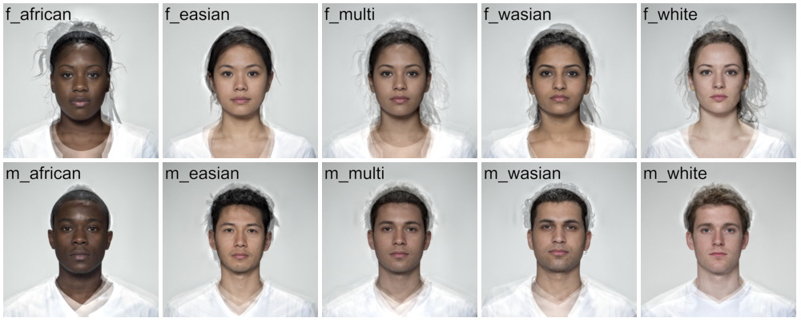
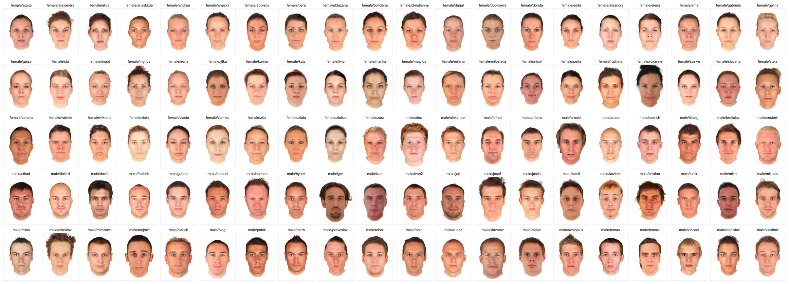

Stimulus sets for use with webmorphR.
Installation
You can install the development version of webmorphR.stim from GitHub with:
remotes::install_github("debruine/webmorphR.stim")Please cite the individual stimulus sets if you use them in publications:
neutral
Images are of 102 adult faces 1350x1350 pixels in full colour. Template files mark out 189 coordinates delineating face shape, for use with Psychomorph or WebMorph.org.
Self-reported age, gender and ethnicity are included in london_info.
All individuals gave signed consent for their images to be “used in lab-based and web-based studies in their original or altered forms and to illustrate research (e.g., in scientific journals, news media or presentations).” Images were taken in London, UK, in April 2012.
CC-BY: DeBruine, L., & Jones, B. (2017). Face Research Lab London Set (Version 5). figshare. https://doi.org/10.6084/m9.figshare.5047666.v5

smiling
Smiling versions of the 102 individuals in the London set.
CC-BY: DeBruine, L., & Jones, B. (2017). Face Research Lab London Set (Version 5). figshare. https://doi.org/10.6084/m9.figshare.5047666.v5

composite
This image set comprises 5 male and 5 female composite images (4 individuals per composite) of adult individuals of African, East Asian, West Asian and White ethnic backgrounds from the London set above, plus a composite image of all 4 ethnic groupings. Images are 1350x1350 pixels in full colour.
CC-BY: DeBruine, Lisa (2016): Young adult composite faces. figshare. https://doi.org/10.6084/m9.figshare.4055130.v1

3dsk
This image set comprises 50 White men and 50 White women ages 18-35. These images are derived from images at www.3D.sk, purchased by Lisa DeBruine and Benedict Jones under their commercial license, which allows for sharing and publication of derivative images for educational use.
CC-BY: DeBruine L, Jones B (2020). 3DSK face set with webmorph templates. OSF. https://doi.org/10.17605/OSF.IO/A3947


canada
This image set contains images of 20 male and 20 female young adult White students from a university in Ontario, Canada. The images have been aligned on pupils and delineated using WebMorph.org. All images are JPGs at 1350x1800 pixels.
Self-reported age and gender are included in canada_info.
CC-BY: DeBruine, L., & Jones, B.. (2017).Young Adult White Faces with Manipulated Versions (Version1). figshare. https://doi.org/10.6084/m9.figshare.4220517.v1

rainbow
This image set contains 18 images from Pixabay, all using the Pixabay License, so they are free for commercial and noncommercial use without attribution, although you can find available attributions in rainbow_info. The images are all 640 pixels wide and varying heights.